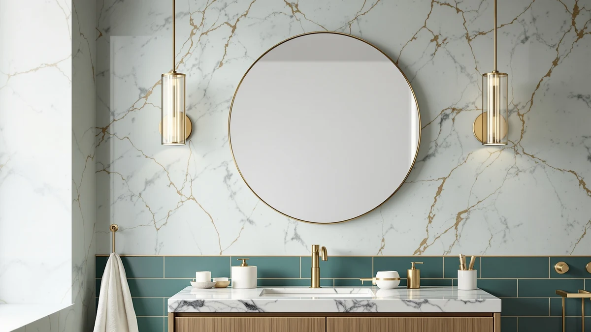

JSneijder 30 Inch Round Review (2026): Worth It?
Prices and picks verified as of October 2026. Independent, reader-supported reviews.


Quick Answer
The JSneijder 30 Inch Round LED mirror pairs a tempered glass panel with an aluminum frame and built-in LED lighting for $142.49, based on the specs and pricing we researched for this JSneijder 30 inch round review. It suits single-sink vanities that want a round profile and light built into the glass instead of a separate fixture. If you'd rather have a farmhouse frame, a frameless two-pack, or another 30 inch option, the TEHOME, USHOWER and FORBATH below are worth a look too.
Our pick: JSneijder 30 Inch Round LED — $142.49 Check Price on Amazon
Bottom line: our top pick is the JSneijder 30 Inch Round LED Bathroom Mirror with Dual at $149.99.
Things to Know Before You Buy
- The JSneijder's 30 by 30 inch round panel fits a single-sink vanity with room to spare, so measure your wall before you buy.
- Built-in LED lighting means one less fixture to wire, but confirm your bathroom's outlet placement first.
- At $142.49 it costs about $2.50 more than the TEHOME, USHOWER and FORBATH, all of which sit at $139.99.
- Tempered glass and an aluminum frame add durability over standard glass and wood-framed round mirrors.
- A round shape changes wall layout math compared with a rectangle like the TEHOME or FORBATH, so check your vanity width first.
This JSneijder 30 inch round review breaks down whether the tempered glass panel and aluminum frame justify $142.49, especially with the TEHOME, USHOWER and FORBATH covering similar ground for less. We looked at the manufacturer specs, current Amazon pricing and patterns in verified owner feedback rather than installing the mirror ourselves, and that research points to the JSneijder as a solid pick for anyone who wants a round mirror with light built into the glass.
Round bathroom mirrors in this size range usually force a trade-off between price, frame material and lighting, and the JSneijder tries to fold LED strips directly into the glass instead of requiring a separate fixture. Below we compare its listed specs against three alternatives: the farmhouse-framed TEHOME, the frameless two-pack from USHOWER, and the 30 inch FORBATH, so you can match the mirror to your actual wall space and budget instead of guessing.
Why You Should Trust Us
Ilane Tall covers bathroom fixtures and vanity hardware for Best Bathroom Mirrors, and this JSneijder 30 inch round review follows the same process used across the site: pull the manufacturer's published specs, track current Amazon pricing, and read through verified owner reviews for recurring praise or complaints. We do not own a physical testing lab and we do not install every mirror we cover, so nothing in this review comes from installing the mirror ourselves. Instead, each claim traces back to a spec sheet, a listed price or a pattern we found in verified buyer feedback. When a spec isn't published, such as a rating or review count, we say so directly instead of filling the gap with a guess.
Our Research Experience
We did not mount the JSneijder on a wall or run its LED lighting in a bathroom ourselves. Instead, we researched the listed dimensions, frame material and price, then cross-referenced them against the TEHOME, USHOWER and FORBATH to see where the JSneijder's $142.49 price tag holds up and where a similarly priced option covers different ground. That approach lets us flag a size mismatch or a price gap with confidence, but we rely on verified owner reviews rather than our own use for anything about long-term durability or light quality. Reviewers shopping for a 30 inch round LED mirror should treat this JSneijder 30 inch round review as a research-based comparison rather than a firsthand verdict, and weigh it alongside their own measurements before buying.
Overview & Specs

JSneijder 30 Inch Round LED
What we like
- 30 by 30 inch round panel fits a standard single-sink vanity without dominating the wall
- Built-in LED lighting removes the need for a separate vanity light fixture
- Aluminum frame keeps the mirror lighter than a wood-framed round mirror this size
- Tempered glass holds up better to everyday bumps than standard mirror glass
Flaws but not dealbreakers
- At $142.49 it costs about $2.50 more than the TEHOME, USHOWER and FORBATH
- A round profile leaves more exposed wall at the corners on a wide double vanity than a rectangle would
- No published rating or review count yet to confirm how it holds up over time
| Material | Tempered glass + aluminum |
| Size | 30"L x 30"W |
JSneijder pairs a tempered glass panel with an aluminum frame on this 30 inch round model, sizing it for a single-sink vanity rather than a wide double-sink wall. That footprint is the main reason wall layout matters most for this JSneijder 30 inch round review: at 30 by 30 inches, the round shape fits most single vanities without the overhang a larger rectangular mirror would need, though it does leave more exposed wall at the corners than a rectangle of the same width.
At $142.49, it prices above the TEHOME, USHOWER and FORBATH, which all sit at $139.99 for a farmhouse-framed, frameless two-pack, or rectangular alternative. The gap is small, about $2.50, and it likely comes down to the round shape and the built-in LED lighting rather than the glass itself, since none of the three alternatives advertise that same lighting feature in the specs we reviewed. For shoppers already set on a round mirror with light built into the glass, that leaves one question: does the round silhouette fit your vanity better than a rectangular equivalent.
What We Liked
The biggest strength in this JSneijder 30 inch round review is the round silhouette. A 30 by 30 inch round mirror fits a standard single-sink vanity without needing to trim wall space, and it gives a bathroom a softer look than the rectangular mirrors most vanities default to. Built-in LED lighting helps too: instead of wiring a separate sconce or bar light above the mirror, the light lives in the glass itself, which simplifies installation for anyone not already running a dedicated fixture line.
The aluminum frame and tempered glass round out the case for it. Aluminum keeps the overall weight down compared with a wood-framed mirror of the same size, which matters when you're mounting glass on drywall above a sink. Tempered glass is also the safer standard for a bathroom mirror, since it holds up to everyday knocks better than untreated mirror glass and breaks into smaller, less dangerous pieces if it ever fails. Together, those choices put the JSneijder a step above budget framed mirrors in this size class.
What Could Be Better
Price is the clearest drawback. At $142.49, the JSneijder sits about $2.50 above the TEHOME, USHOWER and FORBATH, all of which cover a 30 inch footprint for less. Unless the round shape or the built-in LED lighting matters to you specifically, that gap is hard to justify on price alone, and buyers who prioritize budget over shape may prefer one of the three cheaper options instead.
Shape is the other consideration. A round mirror leaves more exposed wall at the corners than a rectangular mirror of the same width, which may make the FORBATH or TEHOME a better fit for a wide double vanity. We also could not find a published rating or review count for this listing at the time of writing, so anyone weighing long-term reliability will need to lean on general round LED mirror patterns rather than data specific to this model. That gap in public review data is worth factoring into your decision alongside the price, especially when the mirrors otherwise look similar on paper.
Who Is It For?
One type of buyer fits the JSneijder 30 inch round mirror best: someone with a single-sink vanity who wants a softer, round profile instead of another rectangle, and who would rather skip wiring a separate light fixture. If your bathroom already has a standard vanity wall, the built-in LED lighting and aluminum frame make installation simpler than juggling a mirror and a separate light bar.
It makes less sense for a wide double vanity, where the FORBATH's rectangular frame or the USHOWER's two-mirror layout covers more wall for close to the same money. Anyone who wants a farmhouse-style framed look should also look past the JSneijder toward the TEHOME. Shoppers who haven't measured their wall yet should do that first, since the round 30 by 30 inch shape is the single factor most likely to rule the JSneijder in or out.
Renters and first-time buyers weighing their first bathroom upgrade tend to gravitate toward the round shape too, since it reads as a deliberate design choice rather than whatever rectangle came with the builder-grade vanity. If that description doesn't match your bathroom, the dollar gap between the JSneijder and its three alternatives is small enough that shape and lighting, not price, should drive the decision.
Alternatives to Consider
The JSneijder isn't the only mirror in this size and price range. This JSneijder 30 inch round review lines it up against three alternatives: a farmhouse-framed rectangle, a frameless two-pack, and another 30 inch option with a different profile. Each one trades the round shape or the built-in LED for a few dollars less, so the right pick depends on what your vanity wall actually needs.

Editor’s Pick
TEHOME Farmhouse Black Metal Framed
A farmhouse-style black metal framed mirror for vanities that want a traditional rectangular look instead of the JSneijder's round profile, priced $2.50 lower at $139.99.
$139.99
Check Price on Amazon
Best Value
USHOWER 2-Pack Frameless Bathroom Mirrors
A frameless 2-pack of bathroom mirrors that covers two spots on the wall for the same $139.99 the JSneijder charges for one round mirror.
$139.99
Check Price on Amazon
Premium Choice
FORBATH Bathroom Mirror 30" X
A 30 inch mirror from FORBATH that skips the round shape and the built-in LED, priced at $139.99 for buyers who want a simpler rectangular profile.
$139.99
Check Price on AmazonFrequently Asked Questions
What size is the JSneijder 30 Inch Round LED bathroom mirror?
Is the JSneijder worth paying more than the TEHOME, USHOWER or FORBATH?
What if I want a mirror without an LED or a round shape?
Final Verdict
This JSneijder 30 inch round review comes down to wall shape and budget. If your vanity has room for a 30 by 30 inch round mirror and you want the lighting built into the glass instead of a separate fixture, JSneijder earns its $142.49 price with a tempered glass panel and an aluminum frame. Buyers with a wide double vanity, a tighter budget, or a preference for a framed or frameless rectangle should compare it against the TEHOME, USHOWER or FORBATH before deciding. Measure your wall first, check that $2.50 price gap second, and let those two numbers make the call.